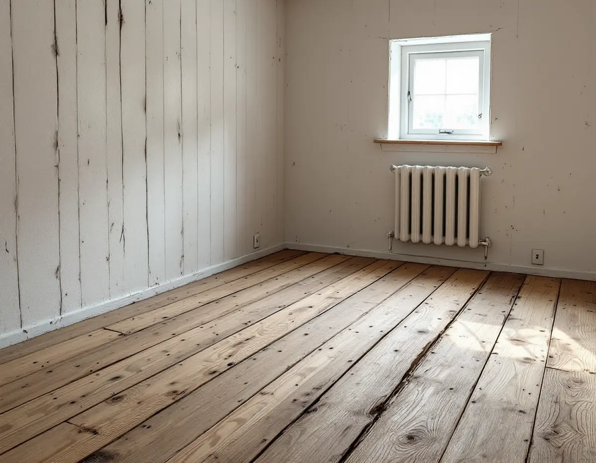
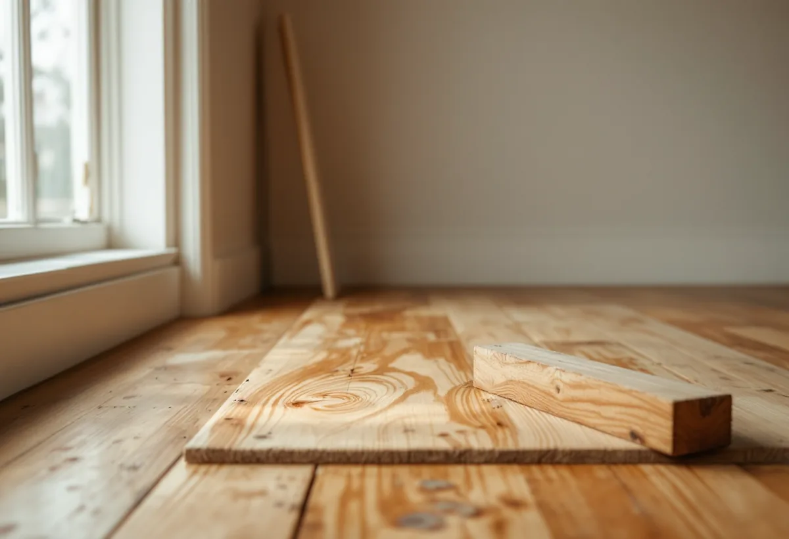

Platsbesök
Vi ser hur brädorna är lagda, spikade och behandlade.
Ett brädgolv som har legat i ett torp i över hundra år har en patina som en golvslipmaskin lätt tar bort. Ofta kommer man långt med lättare metoder, och ibland är det bättre att lyfta brädorna än att slipa ned dem. Geal Entreprenad AB slipar och renoverar trägolv i villor, stugor och äldre hus i Tyresö, och vi väljer metod efter golvet.

Stockholms läns museum gjorde 2008 en kulturhistorisk bedömning av Solberga och en del av Raksta på uppdrag av kommunen. Efter Claes Lagergrens död 1930 började Tyresögodsets marker exploateras, och vid slutet av 1950-talet hade nästan hälften av det gamla godset exploaterats för fritidshus. För Solberga fastställdes en byggnadsplan 1952, och tomterna i Raksta såldes från 1958.
Inom området finns sex byggnader från 1700- och 1800-talet, i huvudsak arbetarbostäder som har hört till godset. I övrigt finns fritidshus från 1950-talet, och rapporten beskriver att en permanentning pågår. I ett av husen har den äldsta stugan kvar breda golvbrädor spikade med handsmidd spik, och i ett annat har ett äldre brett brädgolv flyttats från rummet till farstun. För Holländartorp föreslår rapporten skyddsbestämmelser som även omfattar interiören med äldre golv- och takmaterial.

I flera svar avråder Svenska Byggnadsvårdsföreningen från golvslip på gamla golv. Om ett grangolv som först skurats och sedan oljats, och som ägaren tyckte hade blivit grått och trist, svarar föreningen att gran åldras till silvergrått. En slipning förstör det smutsavvisande skiktet och ger ett dött golv utan slitage, så hellre fortsätta med såpa. Har ytan däremot spruckit upp så att man får stickor i fötterna är en slipning befogad.
I ett annat svar, om ett ojämnt golv med färgrester och spikhål i en timrad byggnad, rekommenderar föreningen en lättare avslipning med handslipmaskin (svararen föredrar själv en oscillerande) och att patinan får sitta kvar i brädornas ojämnheter innan golvet målas med linoljefärg. Att köra golvet med golvslip skulle ge en yta som blir platt och död i jämförelse. Om ett golv som verkar tjärat skriver föreningen att golvslipen tar ganska mycket av brädornas tjocklek, och att man i första hand bör slipa med en liten excenterslip på 125–150 millimeter.
Innan något slipas ska spiken bort. Golvbranschens riktlinjer för slipning påpekar att spik kan förstöra slippapperet och ge gnistor, med risk för dammexplosion i slipdammpåsen. Har golvet varit täckt av masonit och linoleum kan det sitta mängder av spik kvar, och föreningen skriver att alla spikar bör tas ur innan golvet slipas. En läsare i frågespalten försänkte i stället de spikar som höll golvet några millimeter.
Gammal färg och fernissa kan normalt sicklas bort, skriver föreningen i ett svar om breda plankgolv från början av 1900-talet. Är tiljorna tjocka kan man slipa golvet, men då försvinner patinan och historien också. Hyvling ger enligt föreningen en vackrare och mer motståndskraftig yta, men handhyvling är ett grannlaga arbete.
Gäller det i stället golvet i en tillbyggnad eller ovanpå krypgrunden finns det mer under golvläggare i Tyresö.
Ibland är springorna så breda att ingen slipning hjälper. I ett svar om ett 1920-talshus vars golv slipats fria från färg beskriver föreningen hur golvet rör sig med årstiderna: springorna är störst på vintern och smalast på sensommaren. En fyllning i springorna behöver därför vara elastisk och kräver underhåll, och material som binder fukt, till exempel hampa, bör undvikas om golvet ska skuras. En mer omfattande åtgärd är att ta loss golvlister och socklar, lyfta golvet försiktigt med kofot, slå ihop brädorna och spika fast dem igen.
Med ett brytjärn för golv brukar det enligt föreningen gå att demontera brädorna försiktigt och lägga tillbaka dem, och ibland kan de vändas, helst med kärnsidan uppåt. Efter ihopbankningen blir golvytan lite smalare, så det kan behövas en kompletterande bräda i samma tjocklek längs ytterkanten. Golvet ska inte läggas för tätt eftersom träet rör sig med årstiderna.
Den första brädan är ofta svårast att få loss. En läsare som lyfte golven i ett gammalt hus upptäckte att brädan närmast väggen var rundad på undersidan, vilket gjorde det lätt. Föreningen påpekar att det finns många varianter beroende på golvtyp, infästning, ålder och tradition, och att man ska gå försiktigt fram så att man ser hur golvet är lagt innan något bryts sönder. Med kilar och kofot kommer man ganska långt.
Vi ser hur brädorna är lagda, spikade och behandlade.
Du får förslag på metod, från lätt avslipning till att lyfta golvet.
Socklar märks upp och tas bort, och lös spik dras ur.
Brädorna lyfts och slås ihop där springorna är för breda.
Ytan slipas, sicklas eller hyvlas så lätt som möjligt.
Såpa, linoljefärg eller annan behandling enligt överenskommelse.
Skatteverket räknar slipning och byte av golv som rotarbete i ett småhus, och till småhus räknas även fritidshus. Huset ska användas som bostad, och arbetet ska göras i den bostad som du äger.
Avdraget beräknas på arbetskostnaden och är högst 30 procent av den. Högst 50 000 kr per person och år får vara rotavdrag, och tillsammans med rutavdrag gäller taket 75 000 kr. Material, utrustning och resor ger inget avdrag. Geal drar avdraget direkt på fakturan.
Golvytan, hur mycket spik och färg som ska bort, om brädorna behöver lyftas och vilken metod som passar golvet. Efter ett gratis platsbesök får du ett skriftligt kostnadsförslag.
Parkett, trägolv, klinker och slipning.
Golvläggning i Stockholm →Takbyte, takbesiktning och plåtarbeten.
Takläggare i Tyresö →Solberga, Raksta och Brevik.
Takrenovering i Tyresö →VA-anslutning, vattenmätare och dagvatten.
Attefallshus i Tyresö →LTA-avlopp, källarbadrum och golvbrunn.
Badrumsrenovering i Tyresö →Startbesked, utstakning och slutbesked.
Byggföretag i Tyresö →Fritidshus som blivit helårshus på Brevikshalvön.
Fasadmålning i Tyresö →Timmerhus, fritidshus och villor i Tyresö.
Fasadrenovering i Tyresö →Gamla bågar och beslag i Tyresö.
Fönsterbyte i Tyresö →Fritidshus som byggts om till villor.
Golvläggare i Tyresö →Stugor som blir helårshus.
Köksrenovering i Tyresö →Rödfärgade hus, stugor och interiörer i Tyresö.
Målare i Tyresö →Stuprör, rännor och beslag i Tyresö.
Plåtslagare i Tyresö →Stugor, altaner och tillbyggnader.
Snickare i Tyresö →Nytt tak med säker väg till skorstenen.
Takbyte i Tyresö →Ny tapet i rum med eldstad.
Tapetsering i Tyresö →Byggrätten i omvandlingsområdena.
Tillbyggnad i Tyresö →Rivningsavfallet, arkivet och eldstaden.
Totalrenovering i Tyresö →